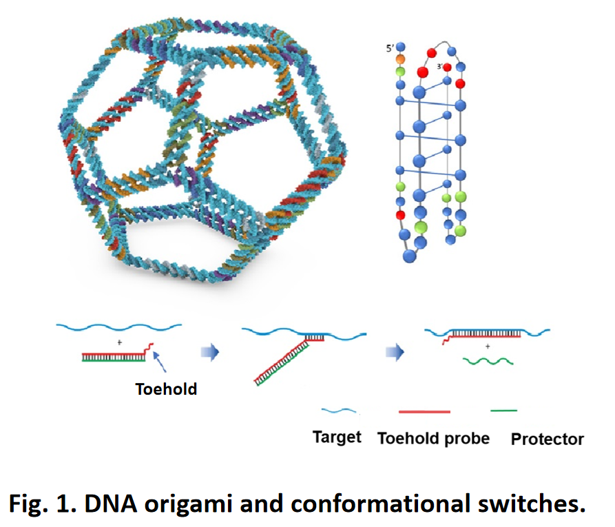
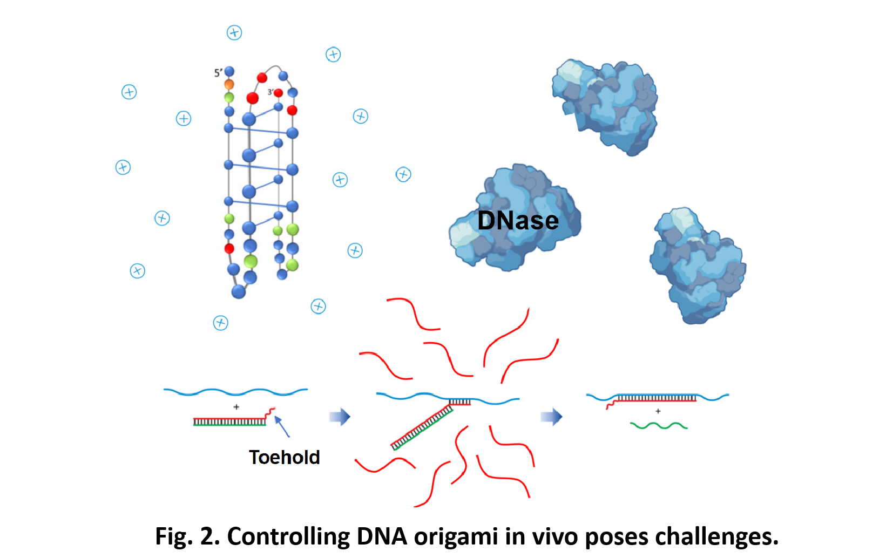
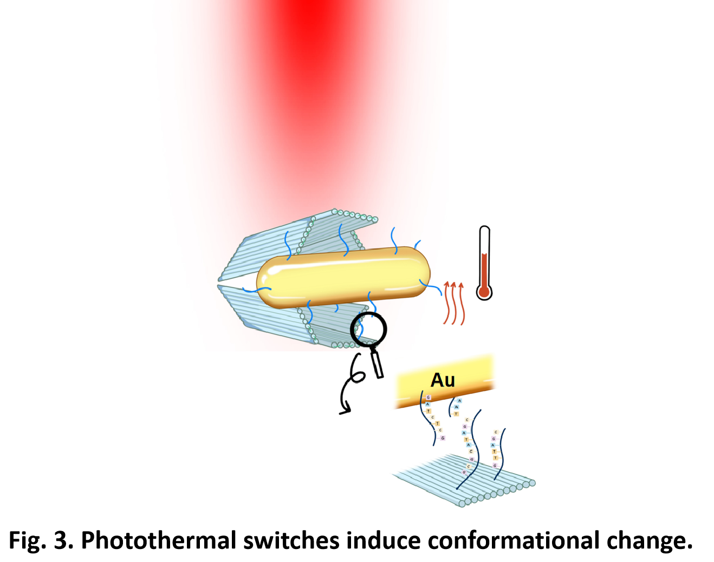
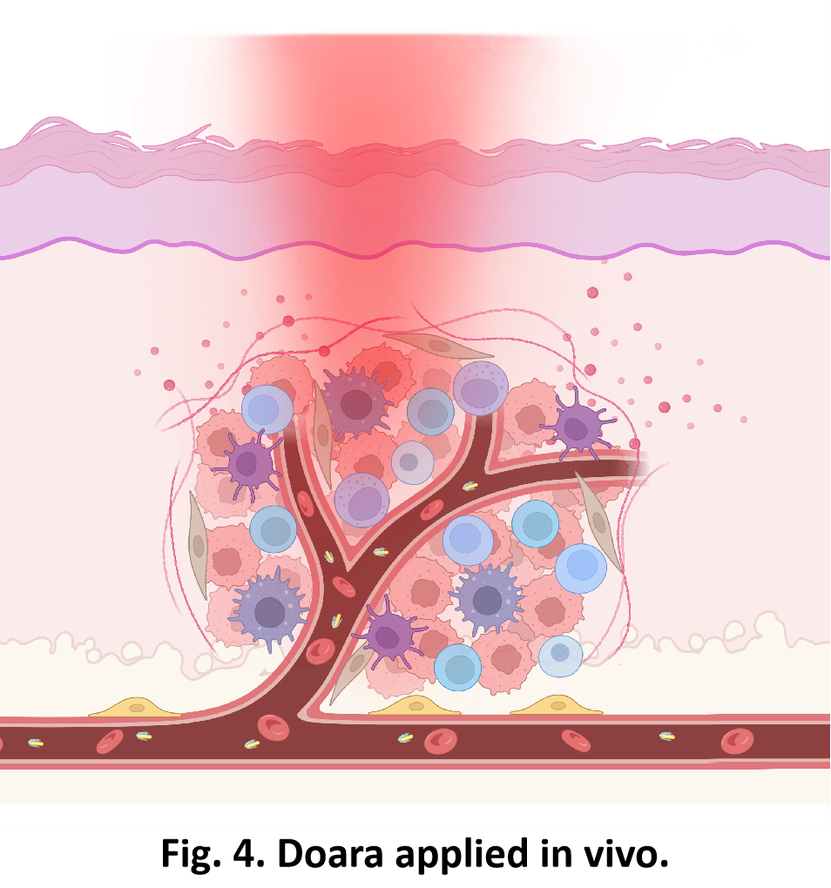

DNA nanorobotics with various conformational switches, including azobenzene[1], toehold mediated strand displacement reaction[2] and i-motif[3], hold a great promise as nanoscale machines with controllable structures and functions. These switches empower DNA nanorobots to execute sophisticated and complex tasks.[4]

However, achieving remote control of DNA origami robots in vivo using current switches still poses challenges, such as the low stability of molecular switches within biological environments[5], slow responsiveness[6], and the restrictions on pH and ion concentration within biological entities.

Herein, we design an in vivo remotely and real-time controllable nanorobot with near-infrared photothermal-responsive switches by utilizing DNA origami coupled with gold nanorods.
In this study, we utilized photoexcitated large-size gold nanorods as our switch to induce conformational change of Doara. By modifying the design of DNA origami to accommodate large-size gold nanorods and irradiating it with near-infrared light to excite surface plasmon resonance.
I. Photothermal Effect as a dynamic conformational control "Switch".
II. Remote near-infrared light activation and tissue Penetration.
III. Rapid response and reversible conformational changes of DNA nanostructures.

Therefore, we address the challenges of remote control and real-time responsiveness in vivo for DNA nanorobots. Additionally, equipping Doara with tumor-targeting monoclonal antibodies allows for near-infrared light activation specifically at tumor sites, facilitating precise, targeted cancer therapy.

References
[1] Kuzyk A, Yang Y, Duan X, et al. A light-driven three-dimensional plasmonic nanosystem that translates molecular motion into reversible chiroptical function. Nat Commun. 2016;7:10591. Published 2016 Feb 2. doi:10.1038/ncomms10591.
[2] Kim M, Lee C, Jeon K, et al. Harnessing a paper-folding mechanism for reconfigurable DNA origami. Nature. 2023;619(7968):78-86. doi:10.1038/s41586-023-06181-7.
[3] Li L, Yin J, Ma W, et al. A DNA origami device spatially controls CD95 signalling to induce immune tolerance in rheumatoid arthritis. Nat Mater. 2024;23(7):993-1001. doi:10.1038/s41563-024-01865-5.
[4] Nummelin S, Shen B, Piskunen P, Liu Q, Kostiainen MA, Linko V. Robotic DNA Nanostructures. ACS Synth Biol. 2020;9(8):1923-1940. doi:10.1021/acssynbio.0c00235.
[5] Shen J, Zhao Y, Pham NT, et al. Deciphering the mechanism of processive ssDNA digestion by the Dna2-RPA ensemble. Nat Commun. 2022;13(1):359. Published 2022 Jan 18. doi:10.1038/s41467-021-27940-y.
[6] Simmel FC, Yurke B, Singh HR. Principles and Applications of Nucleic Acid Strand Displacement Reactions. Chem Rev. 2019;119(10):6326-6369. doi:10.1021/acs.chemrev.8b00580.